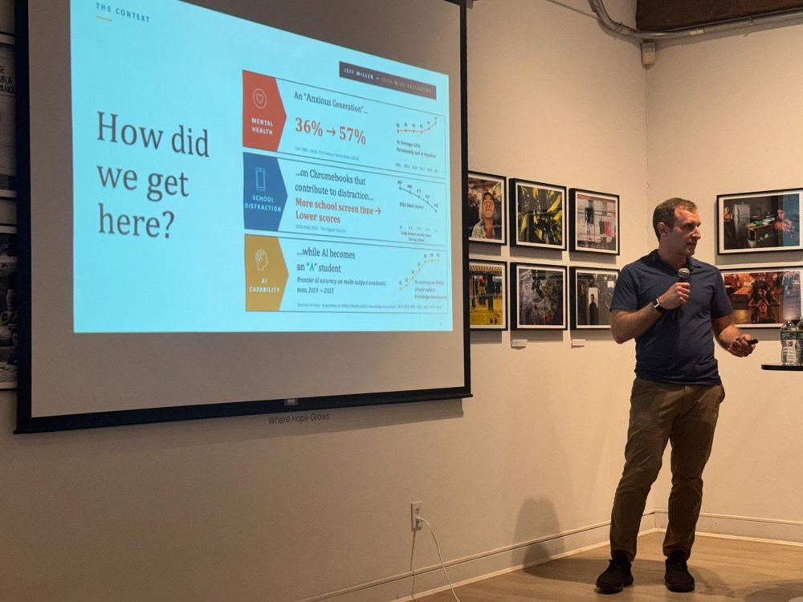
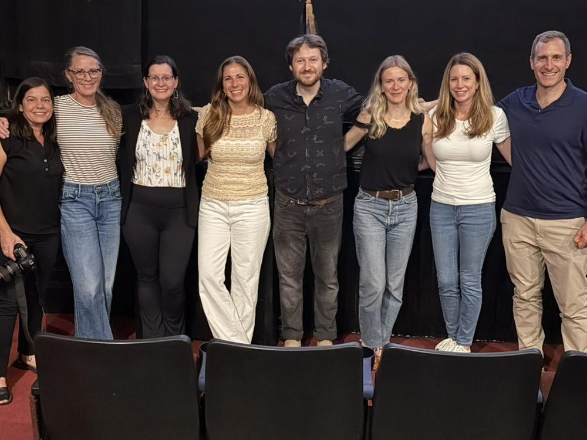

short, clear guides for busy parents
You don't need to read every study to make good decisions for your family. We've done the digging, whether you have five minutes or a free evening.
the three guides parents ask for most
Why Wait?
What the research says about delaying smartphones, and how to talk with your kids (and other parents) about it.
Slow Tech Down at Home
Simple habits, phone settings and router settings that help right away.
What Parents Need to Know About AI
What it is, why it matters for kids, and what to do about it.
explore the issues
More childhood before the phone. Many families are choosing to wait on smartphones until high school and social media until 16. It's what the research supports. Waiting also gives kids time to develop a sense of life without the demands of technology, so when they have access, they're empowered to make a choice between tech or real life.
Why Wait?
What Is Addictive Design?
Slow Tech Down at Home
Family Media Plan
Screen Time Recommendations by Stage
Smartphone Alternatives
What each option costs, what it does, and what goes wrong with it.
School should be the easy part. Phones in pockets and screens on every desk have changed how kids learn and connect at school. Here's what we know about why distraction-free classrooms work.
Powerful, and unsafe for kids. Using AI well takes the judgment to question what it tells you, and that's exactly what kids are still developing.
What Parents Need to Know About AI
Where We Stand on AI
Artificial Intimacy
A book by Sherry Turkle.
Busy kids don't miss their screens. When kids' days are full of people, play and things they love, screens lose their pull.
Why Reconnecting in Real Life Matters
Reconnect Checklists
Printable lists of real-life fun for ages 3–6, 7–13 and 14–18
Values-Based Parenting
A Holistic Approach to Keeping Tech in Check
you're not imagining it
of high schoolers are on social media several times a day or more.
CDC, Youth Risk Behavior Survey, 2023. MMWR, October 2024
Kids who have a smartphone by 12 have higher odds of depression, obesity and poor sleep, and the earlier they get one, the higher the risk of obesity and poor sleep.
Barzilay et al., Pediatrics, December 2025. American Academy of Pediatrics
of American adults now support phones away during class.
- Big tech is losing in court. Juries have ruled against Meta, and Meta has settled with state attorneys general over designing its apps to hook young users. Read our briefing
- Phone-free schools are close. Both chambers of the Massachusetts Legislature have voted for bell-to-bell, phone-free schools, but the final bill is stuck in conference committee. Where Massachusetts standsTake action
- Big districts are pausing AI. New York City and Los Angeles have paused student AI use. Sign the petition
Sources: NPR, March 2026; Massachusetts Attorney General's Office, August 2026; Massachusetts Legislature, S.2581; K-12 Dive, September 2026.
Where we stand: our platform on phones, social media, gaming, school tech and AI, with age-by-age guidance. Where We Stand on Tech
ready to push for change at school?
Our playbooks walk you through it, from one conversation with a teacher to district-wide policy.
for your nightstand, your book club, or your next parent night
- Mattering in a High-Pressure World: Helping Youth Thrive Beyond Achievement Culture. Educator and author Stephanie Malia Krauss on why young people thrive when they feel seen, valued and connected, not just evaluated. September 30, 2026. Watch
- The Homework Machine: AI and the future of our schools. MIT Professor Justin Reich, director of the MIT Teaching Systems Lab and host of the podcast The Homework Machine, on what generative AI is doing to teaching, learning and the classrooms our kids walk into. Introduced by TLO board member Jeff Miller. Recorded May 13, 2026, at the Griffin Museum in Winchester.
- Keeping Tech in Check with Culture Reframed. A Culture Reframed webinar with digital wellness experts Julia Storm and Adrienne Principe, moderated by Dr. Mandy Sanchez. It covers how screens affect kids' social and emotional well-being, how to be "smart, not scared," how to keep kids safe online (including what to do if they've seen pornography), and practical ways to keep tech in check at home and in your community. July 2025. Watch
See allShow fewer
- Goodnow Community Read: The Anxious Generation. A panel discussion of Jonathan Haidt's book for the Goodnow Library's community read in Sudbury, with Adrienne Principe, Sudbury Officer Kim Mangano, psychiatrist Dr. Allison Baker, and Gabriela Nguyen, founder of APPstinence. February 11, 2025. Watch
- Solutions to the Social Dilemma. A panel and town hall on what it means to be digitally healthy, and the concrete steps families can take. It opens with teen advocate Aliza Goldie Kopans, co-author of the "Dear Parents" report, followed by a panel with Dr. Criscillia Benford, Dr. Gail Dines of Culture Reframed, Dr. Sharon Maxwell, Chelsea Maxwell, Helena Rampersaud and Jay Vidyarthi. Hosted by Adrienne Principe and psychotherapist Teodora Pavkovic. October 2020. Watch

- Your Attention Please (2026). Parents, Gen Z reformers and tech whistleblowers push back against the attention economy. It's hopeful, not doom and gloom, and it's made by Boston filmmakers.
- Childhood 2.0 (2020, free on YouTube). Parents, kids and experts on what growing up online really looks like.
- The Social Dilemma (2020, Netflix). Former tech insiders explain how social media is designed to hook us.
See allShow fewer
- The AI Doc: Or How I Became an Apocaloptimist (2026, PG-13, Netflix). An expectant father interviews tech leaders and experts to understand what AI could mean for his child's future.
- Adolescence (2025, Netflix, rated TV-MA). A gripping drama about a teenage boy and the online world his parents couldn't see. For parents to watch first. It's intense.
- Can't Look Away (2025, Bloomberg). Families and lawyers take on social media companies over harm to kids.

- The Anxious Generation by Jonathan Haidt. How the shift to a phone-based childhood changed kids' mental health, and four norms to turn it around.
- Artificial Intimacy: Who We Become When We Talk to Machines by Sherry Turkle (new, September 2026). What happens when chatbots stand in for human connection.
- Reclaiming Conversation: The Power of Talk in a Digital Age by Sherry Turkle. Why face-to-face conversation is where empathy grows.
See allShow fewer
- The Big Disconnect by Catherine Steiner-Adair, EdD. How technology is changing family relationships, told through kids' own voices.
- The Cyber Effect by Mary Aiken, PhD. A cyberpsychologist on how online life shapes behavior, especially kids'.
- Generations and iGen by Jean Twenge, PhD. The data behind how each generation, and especially today's kids, is growing up differently.
- The Shallows: What the Internet Is Doing to Our Brains by Nicholas Carr. How constant connection changes the way we read, think and remember.
- Stolen Focus: Why You Can't Pay Attention, and How to Think Deeply Again by Johann Hari. Why attention is harder than ever, and what we can do about it.
- Your Undivided Attention from the Center for Humane Technology. Conversations about building technology that serves people instead of exploiting them.
Turning Life On may earn a small commission from books purchased through these links, which supports our work in communities across Massachusetts.
ready to do something with what you've learned?
Whether it's one conversation with a teacher or starting a group in your community, there's a first step that fits.